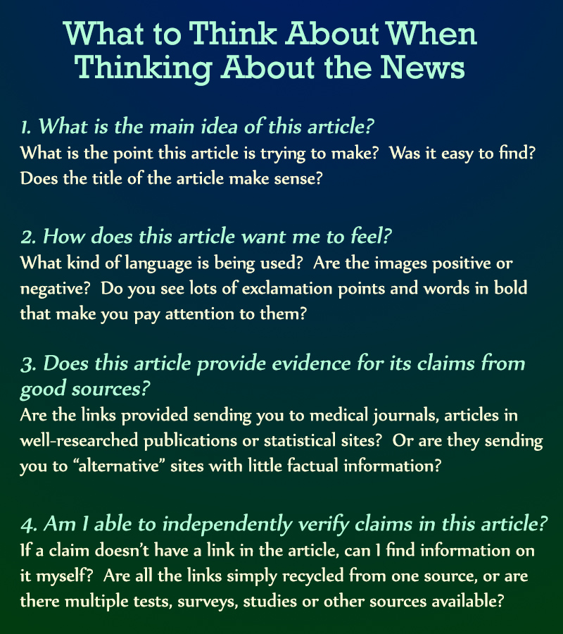
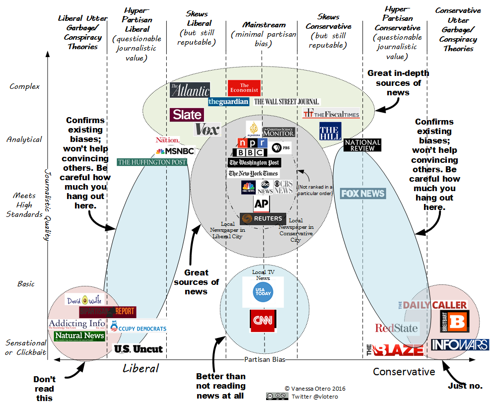

News bias

Tips for analyzing the news
Melissa Zimdars, a professor at Merrimack College, has compiled suggestions on how to spot a fake news site.
Tips for analyzing news sources:
- Avoid websites that end in “lo” ex: Newslo (Newslo is now found at Politicops.com). These sites take pieces of accurate information and then packaging that information with other false or misleading “facts” (sometimes for the purposes of satire or comedy).
- Watch out for common news websites that end in “.com.co” as they are often fake versions of real news sources (remember: this is also the domain for Colombia!)
- Watch out if known/reputable news sites are not also reporting on the story. Sometimes lack of coverage is the result of corporate media bias and other factors, but there should typically be more than one source reporting on a topic or event.
- Odd domain names generally equal odd and rarely truthful news.
- Lack of author attribution may, but not always, signify that the news story is suspect and requires verification.
- Some news organizations are also letting bloggers post under the banner of particular news brands; however, many of these posts do not go through the same editing process (ex: BuzzFeed Community Posts, Kinja blogs, Forbes blogs).
- Check the “About Us” tab on websites or look up the website on Snopes or Wikipedia for more information about the source.
- Bad web design and use of ALL CAPS can also be a sign that the source you’re looking at should be verified and/or read in conjunction with other sources.
- If the story makes you REALLY ANGRY it’s probably a good idea to keep reading about the topic via other sources to make sure the story you read wasn’t purposefully trying to make you angry (with potentially misleading or false information) in order to generate shares and ad revenue. Thanks to Ed Brayton for this tip!
- If the website you’re reading encourages you to DOX individuals, it’s unlikely to be a legitimate source of news.
- It’s always best to read multiple sources of information to get a variety of viewpoints and media frames. Sources such as The Daily Kos, The Huffington Post, and Fox News vacillate between providing important, legitimate, problematic, and/or hyperbolic news coverage, requiring readers and viewers to verify and contextualize information with other sources.
For more on this topic and a list of fake news sites, see Professor Zimdars' "False, Misleading, Clickbait-y, and/or Satirical “News” Sources."
Associated Press Fact Checks the News
How to teach people to evaluate fake news
Teaching Popular Source Evaluation in an Era of Fake News, Post-Truth, and Confirmation Bias
by Lane Wilkinson, librarian at the University of Tennessee at Chattanooga
This is an excellent blog regarding how librarians think when teaching students about fake news.
The post gives people an insight into how librarians put together presentations on fake news.
"Conclusion
The nutshell is this:
simply giving students a bullet pointed list of “ways to spot fake news” isn’t sufficient;
you need to teach in a way that avoids triggering poor cognitive processes.
Time instruction correctly. Include accountability; have students justify their search behaviors to their peers.
Avoid emotionally-charged examples. Move beyond acronyms. Focus on the search process, not the search results.
Teaching information evaluation is as much about how you teach as it is what you teach."
Also included is a 68 slide presentation Wilkinson made at a conference in January 2017.